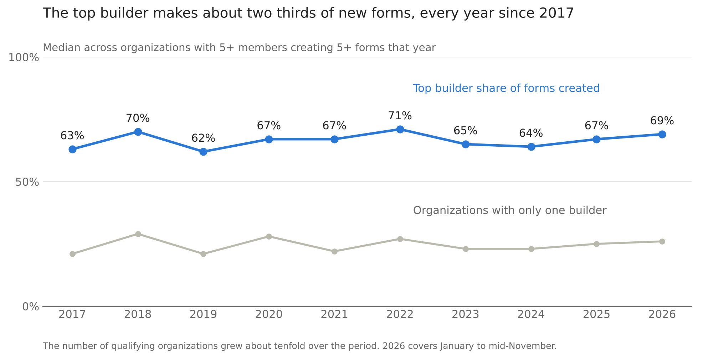
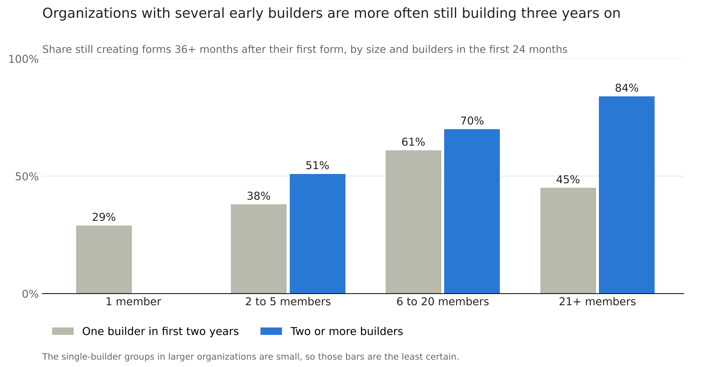

Over the past decade, digital public goods used by organizations and governments, such as Solstice and mWater, became more widespread and far easier to use. Movement happened from paper and Excel to shared databases, drag and drop dashboards, and visual form builders. In 2026, AI assistants began building management dashboards on request with ever better results. Across that timespan from 2017-2026, the number of organizations building their own data systems on our platforms grew tenfold.
Who in those organizations does the building itself? If tools really did become that much more available and easier to use, we’d easily expect the share of people building forms and dashboards within orgs to be larger. But looking through the metadata, the picture has not changed. For ten years the building has rested with a small group within each organization, about two for smaller organizations and three to four in larger ones. In this post I’ll explore this pattern and talk about its implications, especially as organizations that began with a second builder were the ones more often adapting their systems three years on.
With AI making a first dashboard far easier to build, the time is ripe to invite more people to own the tools they work with and grow their ambition and reach. My recommendation here, on the evidence so far: when you are building a system, spread the responsibility from the start, onboard a second builder early, and treat that as only the beginning. I will also discuss whether that second builder has to be a person, which is an increasingly open question.
What’s in the metadata
Solstice Institute runs a free platform that organizations use to build their own data-collection forms, dashboards and monitoring systems. Most of those are government agencies, utilities, and non-profits. The platform records who created each form and dashboard, and when they did it. Using just that metadata the system shows, for each organization and each year, how many forms each member created. I explored how evenly that work was spread, looking at organizations with at least five members whose staff created at least five forms in a year, to establish a minimum baseline of activity.

What I found
In the typical organization, one person creates about two thirds of the new forms in a year. That share was 63% in 2017 and 69% in 2026. It moved between 62% and 71% in every year between, with no direction. About one organization in four has a single builder, and that has not moved either.
A useful summary is the "effective number of builders." It asks how many equal builders would produce the same spread of work. The median is about two, landing at 1.9 in 2017 and 1.8 in 2026.
The number itself depends on where I draw the lines. In larger organizations, with ten or more members and ten or more original forms, the effective number is between three and four. But that figure is just as flat across the decade. I also counted dashboards and maps in place of forms. The result was the same shape, with a small rise in concentration in the last two years. All of this is about who builds; I have not yet measured how widely dashboards are read.
The pattern is therefore the stable element. An organization of a given size, doing a given amount of building, spreads that work in 2026 the way it did in 2017.
Why this is surprising
Things changed a great deal over these years: the tools became easier, the organizations became more numerous and more varied, and AI assistance arrived and kept improving. Yet, in aggregate, none of them left a sizeable mark on who builds.
This suggests that, once an organization has adopted a system, ease of use is not what limits who builds. I say that as someone whose job is to make these tools easier. A more likely reading is division of labor: building an information system is a dedicated role. Organizations fill it with one or two people, as they fill the role of bookkeeper. The tool decides how fast that person works without setting how many people hold the role.
Does it matter?
A division of labor is not a weakness and most of us are glad that one person keeps the accounts. But an information system is different from a set of accounts in one respect: it has to keep changing. A form that cannot be revised slowly stops describing the work actually being done.
So a second question emerged: Do organizations that start with more than one builder keep building for longer?
I took the organizations that began between 2016 and 2021 and created at least five forms in their first two years. I counted their builders in those two years. Then I looked only at what happened after year three.

Among organizations with more than one member, 69% of those with two or more early builders were still creating forms three years on. For those with a single early builder, it was 45%.
Much of that gap is size. Bigger organizations have more builders and also last longer. When I compare organizations of similar size, the gap narrows to between 9 and 13 points in small and mid-sized organizations. It stays wide only in the largest, and those include dedicated systems that my own team helps set up with more than one person involved, so part of that gap may be our doing. Across all sizes, organizations with several early builders had about twice the odds of still building.
This is an association and I have to think about confounding factors. Organizations with several builders tend to have more funding and longer mandates. Some single-builder organizations were running a two-year project that ended on schedule.
What this means for digital public goods
Much of the discussion about digital public goods is about access. Is the software open and free? Can an agency adopt it without a vendor? Solstice being free to use, and free from the need to have a technical maintainer run it, has contributed a lot to its growth and success.
These findings point to a second question. Once an institution has the tool, where does the knowledge of how to change it live? In most organizations I observed, it lives in one or two people.
For anyone who funds or designs these systems, training "the organization" usually means training one person. Counting user accounts will not show this as well as counting who specifically does the building. A more useful test is to ask who else could revise the system if the person who built it left tomorrow.
What I would build differently
In July of 2026 I wrote that AI stands to make everyone a superuser. The data from the AI designers' first nine months, February to mid-November 2026, say that has not happened yet: so far AI has made the existing superusers more productive, sometimes by large margins. Outside the dashboard data, I have seen weeks of data cleaning work done in an hour with AI help. New users keep arriving, but in each organization the building still sits with the same few people. These are still early days for AI adoption, and I remain open-minded about where it goes. Boosting regular users remains a goal for me, but keeping this post’s analysis in mind, I think reaching it takes a different approach from the one that got us here.
First, I would treat the second builder as a product outcome and measure it: the share of organizations in which a second person has built something within the first 90 days. That is only an early signal. What I am after is two people who can maintain the system independently and explain its main indicators, and in time I would want to measure that too.
Second, I would bring to self-serve organizations a practice we already follow on the dedicated systems we set up with partners, where we make sure more than one person is involved from the start. The product should notice when only one person has ever changed a system and prompt them to bring in a colleague.
Third, I would aim AI design help at the people who have never built. Today it is offered when someone starts a new dashboard, so it reaches people who have already decided to build. Take a district water officer who approves survey responses every week and only ever views the dashboard built on them. She should be able to open the assistant on that dashboard and ask for the share of working water points broken down by sub-county. The assistant drafts the widget, the dashboard owner approves it, and she has made her first change without needing edit rights.
And speaking of second builders, we are building one of a kind, available to everyone: a collaborator, where the second builder I am arguing for is an accountable colleague. Alongside the connectors for your AI, available since May 2026, we are building an assistant that can be opened beside any page to guide a user or act for them. The tension in having a platform with constantly expanding capabilities is the growing learning curve and the multiplying ways different features can connect with each other. It will certainly help the people who already build and deploy their ambition in our platform. For the question in this article, I will count it a success if the share of first-time builders among its users is clearly higher than for our current AI tools.
I would drop the second-builder idea altogether if a randomized trial of second-builder onboarding showed no difference in who is still building two years later, or if single-builder organizations turned out mostly to stop because their projects end on schedule.
Accelerating digital technology and institutional freedom
Ten years ago a government may not have had a national water data management information system (MIS) at all. With SaaS they may have gotten one they can operate and, in principle, change, though from what I see the changing sits with a very small group of people within an organization. With AI they can end up with a system they operate and can change, but struggle to understand, or delegate their thinking to the external recommendations of the AI. I want to design for institutions that go on understanding their own systems and deciding for themselves.
Suppose a designated system champion becomes reliant on powerful AI dashboarding features and presents a great new management console to an important audience. As more is delegated to AIs, how do we ensure that someone in a ministry can explain why an indicator is calculated in the way it is? Can they push back when the AI’s suggestion is not appropriate?
An institution’s capacity to shape its own tools is part of its freedom. A ministry that can revise its own monitoring system decides for itself what it pays attention to, and one that cannot is being directed, however gently. Our data shows where that capacity sits today: with very few people.
AI now hands those few people a pair of binoculars, and the lenses are a little rose-tinted. They have a multiplier in their hands, can see further than they ever have, and what they see looks slightly better than it is, because these assistants are built to be deeply agreeable, carry biases, and may lack the context to be critical enough. Nothing is taken away; the institution just stops looking with its own eyes.
We live in an unstable era and choppy seas need binoculars. From what the data tells me, the tonic is a second builder: someone who can pick them up, put them down, and say what they see without them. Could the second builder be an AI? It would never leave, which is the continuity my data measures, but as things stand it cannot hold the reasons behind a system or refuse a bad request. So if you fund, design or run a public digital system, plan for more than one builder from the first month, above all in the one organization in four where a single person does all the building. That is why I want the tools I work on to explain what they have built, to wait for a person’s approval, and to leave every institution with more than one person who understands its own system.
Method and ethics
This analysis used system-generated metadata only: which account created which form, when, and which organization that account belongs to. Queries did not run on survey responses, form contents, personal details or locations. All results are aggregates. Every group reported includes at least 20 organizations, and I report shares, not counts. I excluded Solstice staff accounts as far as I could identify them. Creating a form is not the same as designing it, since one person may enter what a team agreed, and I cannot see members who were later removed from an organization. I ran the queries and drafted this post with an AI assistant, and checked and challenged its results and wording myself. The 2026 figures cover January to mid-November.